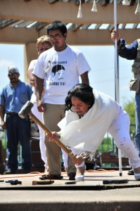
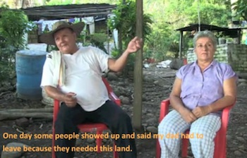

|
 In October of 2012, the Colombian government and the Revolutionary Armed Forces of Colombia (FARC) guerrillas began peace negotiations, raising hopes that the decades-long armed conflict in Colombia could finally be coming to an end. Please take two actions to support a just and sustainable negotiated solution of the armed conflict. In October of 2012, the Colombian government and the Revolutionary Armed Forces of Colombia (FARC) guerrillas began peace negotiations, raising hopes that the decades-long armed conflict in Colombia could finally be coming to an end. Please take two actions to support a just and sustainable negotiated solution of the armed conflict.
Read more and download the worship packet.
We are thrilled to announce the first FOR and Service for Peace and Justice (SERPAJ) delegation to Colombia from June 2 to June 16. Rooted in the theory and practice of active nonviolence, SERPAJ has worked since 1974 building awareness of the structural causes of violence that marginalize, oppress, and exclude our fellow citizens.
The delegation will be a unique three-section trip that will open windows to different regions of Colombia, offering the opportunity to see differences and similarities and to build solidarity. Participants will visit the Peace Community of San José de Apartadó, as well as Bogotá and the Caribbean coast, where SERPAJ and ecumenical groups use tools of active nonviolence to address the impacts of the armed conflict and contribute to reconciliation. Learn more and view the application.
By John Lindsay-Poland
The United States is assisting several units under the command of Honduran police chief Col. Juan Carlos Bonilla, who has been credibly accused of three extrajudicial killings that occurred in 2002, and links to 11 more deaths and disappearances. Honduran prosecutors have documented some 200 death squad-style killings in Tegucigalpa and San Pedro Sula in the last three years, many since Bonilla became police chief, according to recent Associated Press reports. The US assistance to units under Bonilla’s command violates U.S. law.
The extensive and persistent corruption, human rights violations including “social cleansing,” attacks on Afro-indigenous and peasant communities, and failed anti-drug strategies of Honduran security forces are urgent and compelling reasons for the State Department and other U.S. agencies to zero out all police and military assistance and cooperation, and to fundamentally recast U.S. policy in Honduras. Continue reading.
By John Lindsay-Poland
More than 100 events were held around the country on March 27 to call for legislative action to stop gun violence. The Senate Judiciary Committee approved legislation that places federal penalties on gun trafficking and the practice of straw purchasing, a new ban on assault weapons and high-capacity magazines, as well as critical legislation requiring a background check on all firearms sales.
The massive grassroots response to the December 14 massacre in Newtown, Connecticut offers both hope that our country is beginning to address its gun problem. The silences in the debate also demonstrate the limits on the efforts to date. Action is needed now to change our country's gun laws. Continue reading.
The Colombian community of El Nilo, made up of three settlements, is three miles from the Tolemaida military base. Since the 1920's, peasant families have been living here and working the land.
In 1954, Colombian dictator Rojas Pinilla acquired these lands to build the Tolemaida base, displacing the people who lived there. Since then, the farmers and the Defense Ministry have been in an ongoing conflict over the ownership of the neighboring lands to which the peasants were displaced. Families who live there are prohibited from bringing in materials to make improvements to their houses or seeds to plant, because if they are eventually resettled, the Defense Ministry would have to pay for these improvements and assets. They continue to resist and fight for their basic rights. Watch the video.
The United States spends some $170 billion every year on military bases and other military presence in other countries, but this presence and its cost often go unnoticed in the U.S. Learn more from this March 14, 2013 presentation by anthropologist/researchers David Vine and Catherine Lutz, followed by discussion with activists who attended. Powerpoint slides and handouts also linked here. See the webinar.
|